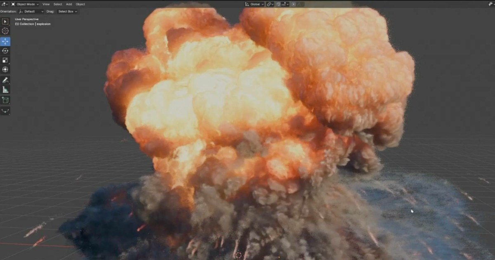

01
Blender 5.3 Alpha 原生支援 Gaussian Splat 匯入與渲染，但 export 與色彩仍有限制
Blender 5.3 開發版加入 PLY／SPZ Gaussian Splat 匯入與各 render engine 渲染，讓掃描／照片重建資料不必先靠第三方 add-on；目前仍沒有 splat export，且效能、線性色彩與 Apply Transform 有已知限制。

Blender ★★★★★
完整分析
DCC 支援變更
Gaussian Splat 開始成為 Blender 原生可匯入、可渲染的資料類型，支援 PLY 與 SPZ，並可在 Blender 各 render engine 中使用；這讓 capture／3DGS 資料能更直接進入一般 DCC 場景與鏡頭流程。
Production 價值
若團隊用照片或影片重建環境，原生支援可減少外掛版本綁定，並讓 mesh、camera、lighting 與 splat 同場整合；對背景、previs、場景 reference 和 hybrid rendering 都有直接工作流價值。
導入限制
目前仍是 5.3 Alpha，官方資訊指出 export 尚未支援，Cycles／EEVEE 線性色彩顯示也不完全正確，Apply Transform 還有 scale／rotation／spherical harmonics 問題；現階段應定位為測試而非正式資產交付。
BRIEF｜來源已驗證；證據深度較有限，完整分析會明確區分已知資訊與待驗證事項。